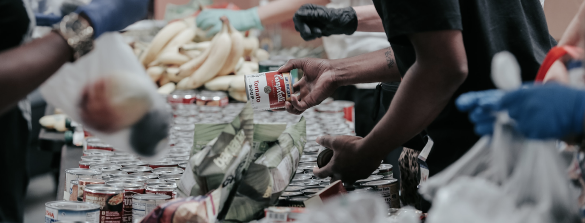

Mission Bright 1k: Outdoor charity outreach
The event brought together families, volunteers, and supporters, strengthening community bonds and shared purpose. It created a welcoming space where people could connect while supporting a meaningful cause. Participants worked together, shared experiences, and built stronger relationships within the community.
It helped raise awareness about the needs of children and the importance of inclusive care and support. Participants gained a deeper understanding of the challenges many families face and how they can help. The event encouraged ongoing conversations about accessibility and inclusion.
The outreach successfully generated support and resources that directly contributed to improving programs and services for children. These funds helped expand access to care, education, and essential support systems.

Community Food Relief & Support
We work with volunteers and local partners to distribute essential food supplies to families in need, ensuring no child or household goes without basic nutrition. Through organized donation drives, we collect and package food items that directly support underserved communities.
- Distributing essential food items to underserved communities
- Organizing volunteer-led donation and packing drives
- Supporting families with consistent access to basic nutrition
20+ orphanage visit in 2 months
Over a two-month period, we completed 20+ orphanage visits, providing consistent care, educational support, and activities.
230 People Have donated
230 people have donated, helping provide essential resources, care, and support to children in need.
30+ people joined
30+ people have joined the initiative, contributing their time and effort to support outreach and orphanage visits.
1.2m Raised for this initiate
$1.2M has been raised for this initiative, funding orphanage visits, essential supplies, and educational support.